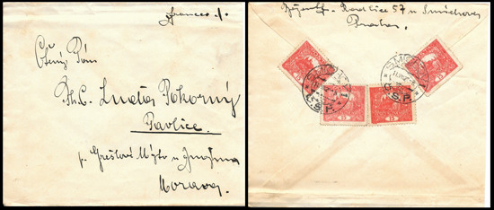
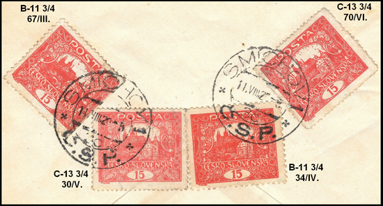

15h Beleg – Ein Schatz für „einen Pappenstiel“
Heute, nach langer Zeit, ist endlich der Augenblick gekommen, wieder zur Tastatur zu greifen und meine Freude mit Ihnen zu teilen. Um Sie in das Thema einzuführen, muss ich kurz in der Zeit zurückgehen.
Meine gesamte zweite Hälfte des vergangenen Jahres stand im Zeichen der Studie zum Wert 15 h. Der freundliche Druck meines „Hradschin-Umfelds“ trug schließlich Früchte, und ich verbrachte den ganzen Rest des Jahres mit dem Studium und der Bearbeitung dieses Wertes. Sieben Druckplatten, acht verschiedene Varianten der amtlichen Zähnungen, fünf katalogisierte Farbtöne, eine Fülle von Typen und Plattenfehlern – all das kostete mich Hunderte Stunden vor dem Monitor, dem Mikroskop, der Lupe und dem Zähnungsschlüssel. Das Ergebnis dieser Ameisenarbeit ist ein 130-blättriges Album, das allein dem Wert 15 h gewidmet ist.
Hier komme ich auf meinen Besuch der Sammlerbörse zurück. Beim Durchsehen einer Kiste mit Belegen fand ich den Umschlag eines gewöhnlichen Briefes, frankiert mit Marken der Ausgabe Hradschin. Der Beleg wurde von Smíchov nach Pavlice in Südmähren gesandt, genauer nach Grešlové Mýto bei Znojmo (Pavlice hatte damals keine eigene Post). Er stammt aus der IV. Tarifperiode, und das Porto von 60 h für einen gewöhnlichen Brief bis 20 g war mit vier Marken zu 15 h frankiert.

Als Mehrfachfrankatur gefiel mir der Beleg, und so kaufte ich ihn. Abends bei der Durchsicht stellte ich zunächst enttäuscht fest, dass der ersten Marke die rechte senkrechte Zähnung abgeschnitten ist. Bei genauerer Prüfung fand ich jedoch, dass die erste Marke aus Platte III, die zweite dagegen aus Platte V stammt. Zwei Marken haben die Kammzähnung B–11¾, die beiden anderen die Linienzähnung C–13¾. Ich machte mich also an die genaue Bestimmung der einzelnen Markenfelder – und stellte überrascht und begeistert fest, dass jede der aufgeklebten Marken aus einer anderen Druckplatte stammt: von links nach rechts B – 67/III., C – 30/V., B – 34/IV. und C – 70/VI.

Wie konnten auf einen offenkundig nichtphilatelistischen Beleg Marken aus vier verschiedenen Druckplatten gelangen? Die Antwort gab mir die erste Marke mit der abgeschnittenen Zähnung: Meiner Meinung nach handelt es sich um die Wiederverwendung von Marken, die von Belegen abgelöst wurden, auf denen sie nicht ordentlich mit dem Poststempel entwertet worden waren. Offenbar eine Praxis, die sich in den Nachkriegsjahren noch aus der Zeit der Monarchie erhalten hatte. Der Absender, der diese vier Marken im August 1920 aus Sparsamkeit aufklebte, ahnte nicht, welche Rarität er schuf und welche Freude er einem Sammler 96 Jahre später bereiten würde.
Zum Schluss eine Bemerkung: Auch in scheinbar gewöhnlich wirkendem Material verbirgt sich die Möglichkeit, interessante und einzigartige Stücke zu finden. Neben dem Glück ist es allerdings unerlässlich, Zeit in das Studium und Geld in Literatur zu investieren – ohne die nötigen Kenntnisse gelangt man nicht zu ihnen.